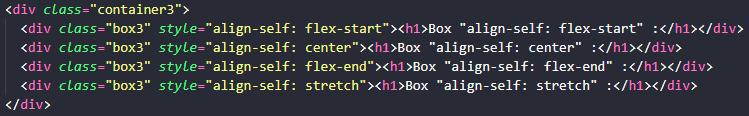

🎯 Objectifs de cet exercice :
Comprendre la propriété align-self pour contrôler l'alignement individuel d'un élément flex.
🔧 La propriété align-self :
- align-self: flex-start : Aligne l'élément au début de l'axe transversal (haut)
- align-self: center : Centre l'élément sur l'axe transversal (milieu)
- align-self: flex-end : Aligne l'élément à la fin de l'axe transversal (bas)
- align-self: stretch : Étire l'élément pour remplir toute la hauteur disponible
💡 À retenir : Contrairement à
align-items qui s'applique à tous les éléments
du conteneur, align-self permet de contrôler l'alignement d'un élément spécifique
individuellement.
📚 Pour en savoir plus :
Documentation MDN sur Flexbox